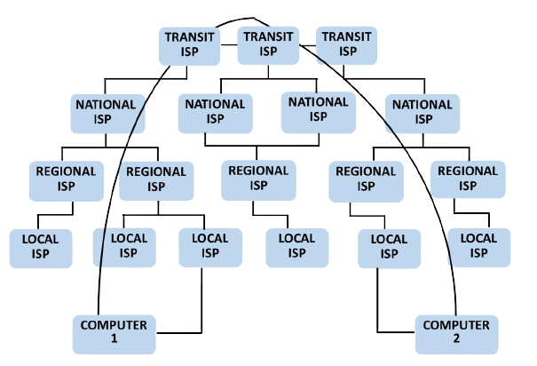

Internet Network Hierarchy
Queenstar Computers: 19 Dec, 2023 | Category>> Networking
The binding element of the global Internet is that networks share a common IP addressing and global BGP routing framework that allows all networks to interconnect with each other either directly or indirectly. There is little regulation, and network operators are free to decide where, how, and with whom to connect. Networks are classified by tiers based on the nature of their connection to other networks. NAP (Network Access Point) is the point from which an Internet service provider (ISP) drops down its lines and establishes a peering arrangement to provide Internet connectivity to customers. There are three ISP tiers as follows:

Tier 1 ISPs
It is a type of ISP that directly connects with and has access to the global Internet backbone in a specific region under the settlement-free peering agreement , where the flow of information between one or more networks is exchanged voluntarily.
Characteristics of Tier 1 ISPs
- It can reach every other network on the Internet solely via settlement-free interconnection/ settlement-free peering agreement.
- They interconnect at Internet Exchange (IX) points.
- They peer on more than one continent.
- They don’t pay to have their traffic delivered though similar-sized networks.
- They have access to the entire Internet routing table, solely through their peering relationships.
- They own or lease transoceanic fiber optic transport.
- They deliver packets to and from customers and to and from peers around the world.
- They use self-owned telecommunications circuits for those parts of their networks in which they have such an infrastructure.
- They may choose to make use of circuits provided by alternative carriers if they lack self-owned circuits.
- Examples: British Telecom, Verizon, Sprint, NTT, AT&T, Singtel, PCCW, AboveNet (AS 6461), Global Crossing, Telstra, and Deutsche Telekom.
Tier 2 ISPs
It is a type of ISP that utilizes a combinaton of paid transit via Tier 1 ISPs and peering with other Tier 2 ISPs to deliver internet traffic to end customers through Tier 3 ISPs.
Characteristics of Tier 2 ISPs
- They are the most common ISPs.
-
- Tier 2 ISPs are smaller than Tier1 networks and are typically regional or national providers.
- They peer with other comparably-sized Tier-2 networks for free, but they have to pay and use the services of Tier1 ISPs.
- A Tier2 ISP is a customer of a Tier1 ISP.
- Many large companies connect directly to one or more Tier1 or 2 ISPs.
- An ISP must pay to use the services of a network at a higher level, the actual cost depending on speed.
- Often, they have lower-quality networks and slower access speeds than tier 1 ISPs.
- They are at least one router hop away from the core of the Internet.
- Tier2 networks may choose to connect (peer with each other) directly, without going through a tier1 network.
- To complicate matters further, some Tier2 ISPs deal directly with end users.
- Only a few tier 2 ISPs are able to provide service to customers on more than two continents.
- Examples: Comcast, Virgin Media, Cox Communications, CTS Telecom, Reach and Singapore Telecom/STIX.
Tier 3 ISPs
It is an ISP that strictly purchases Internet transit.
Characteristics of Tier 1 ISPs
- They have to pay and interconnect via a higher-level network i.e., they use and pay higher-tier ISPs for access to the rest of the Internet.
- It is primarily engaged in delivering Internet access to end customers through cable, DSL, fiber or wireless access networks.
- They are usually last mile providers, meaning they connect consumers to the internet without a network of their own, servicing only the connection leading into your home or office.
- They have many end users, but no or very few destinations (i.e., servers) on their networks.
- Their coverage is limited to a specific country or to sub-regions, such as a metropolitan area, within a country.
- They have relatively low network quality and access speeds because tier 3 ISPs' traffic requires several router hops to get out to a URL and because internet providers have little control over tier 3 ISP networks hence they are usually artificial congested and poorly maintained.
- Tier 3 ISPs are customers of higher-tier ISPs for access to the rest of the Internet.
- Tier 3 ISPs focus on local retail and consumer markets. They provide the "on ramp" or local access to the Internet for end customers.
- Users of lower-tier ISPs share a common gateway to higher tier ISPs, and the gateway bandwidth may degrade the access bandwidth.
Read also ->>>>>